01 · En un coup d'œil01 · At a glance
Ce que les chiffres disentWhat the numbers say
Chaque chiffre de cette page vient d'un relevé daté et archivé. Les captures d'origine, avec leur date et leur fenêtre de mesure, sont reproduites en fin de page. Rien n'est reconstitué de mémoire : un chiffre sans sa date ne se réutilise pas.Every figure on this page comes from a dated, archived reading. The original screenshots, with their date and measurement window, are reproduced at the end of the page. Nothing is reconstructed from memory: a figure without its date cannot be reused.
Les requêtes cœur de métier passent du bas de la page 2 au haut de la page 1.Core business queries move from the bottom of page 2 to the top of page 1.
La visibilité progresse plus vite que le trafic : la demande existe, il reste à la convertir.Visibility is growing faster than traffic: the demand is there, it remains to be converted.
Parité complète avant et après la bascule : aucune page perdue, aucun signal SEO sacrifié.Full parity before and after the switch: no page lost, no SEO signal sacrificed.
Absente des moteurs génératifs en avril, la marque est aujourd'hui citée dans une réponse sur deux.Absent from generative engines in April, the brand is now cited in one answer out of two.
02 · Le déroulé02 · Sequence
Quatre temps, jamais mélangésFour phases, never mixed
L'ordre est la décision la plus structurante du projet. Mener deux chantiers en même temps aurait rendu tout résultat inexplicable.The order is the project’s most structural decision. Running two workstreams at once would have made every result impossible to explain.
-
Oct. 2025 → juil. 2026Oct 2025 → Jul 2026
TerminéDoneLe travail éditorial et localEditorial and local work
Sur l'ancienne plateforme, malgré ses limites. C'est ce qui a produit l'essentiel des impressions.On the old platform, despite its limits. This is what produced most of the impressions.
-
19 juilletJuly 2026
TerminéDoneLa migration, à l'identiqueThe like-for-like migration
Mêmes contenus, mêmes adresses, même structure. Aucune amélioration pendant la bascule.Same content, same addresses, same structure. No improvements during the switch.
-
Juil. → août 2026Jul → Aug 2026
En coursIn progressGel, puis le technique seulFreeze, then technical work only
Balisage en entités, signaux d'autorité, dates de fraîcheur, refonte du blog. Rien qui touche aux adresses ni au maillage.Entity markup, authority signals, freshness dates, blog redesign. Nothing touching addresses or internal linking.
-
À partir du 20 août 2026From 20 August 2026
En attente de déploiementAwaiting deploymentLa restructuration en silosRestructuring into silos
Le plan est arrêté et daté : l'exécution est calée sur la sortie de la période de gel, au 20 août 2026.The plan is settled and dated: execution is scheduled for the end of the freeze period, on 20 August 2026.
03 · L'analyse03 · The analysis
Un site passé par quatre plateformes en trois ansA site that went through four platforms in three years
Webflow, puis Podia, puis Squarespace. Chaque déménagement a laissé des traces : des adresses abandonnées, des articles perdus, des redirections jamais faites. En octobre 2025, le trafic organique était en grande partie accidentel : aucune page ne ciblait de requête précise. Quatre sources ont été croisées pour établir l'état réel : l'historique Search Console sur seize mois, un crawl technique complet, le profil de liens entrants et l'inventaire de toutes les adresses. Aucune conclusion n'a été tirée d'une seule d'entre elles.Webflow, then Podia, then Squarespace. Each move left traces behind: abandoned addresses, lost articles, redirects never set up. By October 2025 organic traffic was largely accidental: no page targeted a specific query. Four sources were cross-checked to establish the real state: sixteen months of Search Console history, a full technical crawl, the backlink profile, and an inventory of every address. No conclusion was drawn from any single one.
Console d'auditAudit console
21 constats · l'état du site avant la basculefindings · the state of the site before the switchErreurindexationPages en erreur 404, héritées de trois plateformesPages returning 404, inherited from three platforms68
Anciennes adresses Webflow, Podia et Squarespace, de 2023 à 2025. Décision : rediriger uniquement vers un équivalent réel. Les pages sans équivalent restent en 404 et disparaissent en trois à six mois : une redirection de masse vers l'accueil est traitée comme une erreur déguisée, et l'historique est perdu.Old Webflow, Podia and Squarespace addresses, 2023 to 2025. Decision: redirect only where a real equivalent exists. Pages without one stay 404 and drop out within three to six months: a blanket redirect to the homepage is treated as a disguised error, and the history is lost.
Search Console · Indexation
Avert.indexationPages protégées par mot de passe, sans consigne de non-indexationPassword-protected pages with no no-index directive401
Trois pages renvoyaient un refus d'accès tout en restant candidates à l'indexation. Corrigé par une consigne explicite plutôt qu'en laissant le moteur deviner.Three pages returned an access refusal while remaining candidates for indexing. Fixed with an explicit directive rather than letting the engine guess.
Search Console · Indexation
Avert.indexationPage incorrecte dans le plan du siteIncorrect page in the sitemap1
Un plan de site qui déclare une page qui n'a rien à y faire envoie le moteur explorer dans le vide, et abîme la confiance qu'il accorde au fichier.A sitemap declaring a page that has no business being there sends the engine crawling into a void, and erodes the trust it places in the file.
SEMrush · 15/07/2026
ErreurbalisageDéclarations de données structurées invalidesInvalid structured-data declarations40
Presque toutes venaient d'un bloc d'établissement injecté automatiquement par la plateforme, vide et non modifiable. Il n'a pas été reconduit sur le nouveau site, où tout le balisage est écrit et validé à la main.Nearly all came from a business block injected automatically by the platform, empty and un-editable. It was not carried over to the new site, where all markup is hand-written and validated.
SEMrush · 15/07/2026
ErreurbalisageDeux blocs déclaraient chacun une FAQ sur la même pageTwo blocks each declared a FAQ on the same page×2
Une seule déclaration est autorisée par page ; deux se neutralisent. Trouvé en lisant le code source, non signalé par les outils.Only one declaration is allowed per page; two cancel out. Found by reading the source, not flagged by any tool.
Audit manuel du code sourceManual source audit
ErreurbalisagePage déclarant plusieurs adresses canoniquesPage declaring several canonical addresses1
Deux canoniques sur une même page, c'est demander au moteur de choisir. Il choisit, et rarement celle qu'on voulait.Two canonicals on one page means asking the engine to choose. It does, and rarely the one you wanted.
SEMrush · 15/07/2026
ErreurlienslinksLiens internes pointant vers des pages inexistantesInternal links pointing at missing pages5
Dont une variante accentuée d'une même adresse : /blog/diplômes-coach-sportif à côté de /blog/diplomes-coach-sportif. Le genre d'erreur qu'aucun outil ne signale comme telle.Including an accented variant of the same address: /blog/diplômes-coach-sportif next to /blog/diplomes-coach-sportif. The kind of error no tool reports as one.
Broken Link Check · SEMrush
Avert.lienslinksLiens externes cassés · domaines toxiques désavouésBroken outbound links · toxic domains disavowed3 · 2
Les deux domaines toxiques ont été désavoués en juin 2026. Le même examen a produit la liste des pages porteuses de liens entrants, celles qu'une migration ne peut pas se permettre de perdre. Certains de ces liens ont trois ans d'ancienneté.The two toxic domains were disavowed in June 2026. The same review produced the list of pages carrying inbound links, the ones a migration cannot afford to lose. Some of those links are three years old.
SEMrush · Search Console · 05/06/2026
ErreurperformanceAffichage du contenu principal, sur mobileLargest contentful paint, on mobile19,5 s
Pour un seuil recommandé à 2,5 secondes. Score de performance : 55 sur mobile, 77 sur ordinateur, avec un premier affichage à 5,4 s et un indice de vitesse à 7,6 s. C'est l'un des motifs directs de la migration.Against a 2.5-second recommended threshold. Performance score: 55 on mobile, 77 on desktop, with a first paint at 5.4 s and a speed index of 7.6 s. One of the direct reasons for migrating.
PageSpeed Insights
ErreurperformancePoids récupérable sur six images seulementRecoverable weight on six images alone1 700 Kio
Servies à leur taille d'origine, sans redimensionnement ni format moderne. Le fichier d'en-tête à lui seul pesait plus d'un mégaoctet.Served at original size, without resizing or a modern format. The header file alone weighed more than a megabyte.
PageSpeed Insights
Avert.plateformeplatformCode non modifiable imposé sur chaque pageUn-editable code imposed on every page~850 Kio
132 Kio de CSS inutilisé, 147 Kio de feuilles de style verrouillées, environ 700 Kio de JavaScript natif jamais appelé et 48 Kio de rustines de compatibilité. Rien de tout cela n'était accessible. C'est le motif de fond de la migration : on ne peut pas optimiser ce qu'on ne peut pas ouvrir.132 KiB of unused CSS, 147 KiB of locked stylesheets, around 700 KiB of native JavaScript never called, and 48 KiB of compatibility shims. None of it was accessible. This is the underlying reason for migrating: you cannot optimise what you cannot open.
Audit de code sourceSource code audit
Avert.performanceLogo servi treize fois plus grand que son affichageLogo served thirteen times larger than displayed548 → 40 px
Une image de 548 pixels de côté pour un affichage à 40. Au-delà du poids, un écart pareil provoque un décalage visuel au chargement: le lecteur clique à l'endroit où l'élément était il y a une demi-seconde.A 548-pixel image displayed at 40. Beyond the weight, a gap like this causes a layout shift on load: the reader clicks where the element was half a second ago.
PageSpeed Insights
Avert.performancePolices externes non préchargées · balise de suivi bloquanteExternal fonts not preloaded · blocking tag manager~900 ms
Les polices étaient téléchargées depuis un domaine tiers sans préchargement, et le gestionnaire de balises se chargeait avant le contenu. Le visiteur attendait des ressources qui ne lui servaient à rien pour lire la page.Fonts were downloaded from a third-party domain without preloading, and the tag manager loaded before the content. The visitor was waiting on resources that did nothing to help them read the page.
PageSpeed Insights
Avert.plateformeplatformDurée de cache navigateur imposée, non réglableBrowser cache lifetime imposed, not configurable1 h
Un an est la valeur recommandée. Le réglage n'était pas accessible: chaque visiteur retéléchargeait tout au bout d'une heure.One year is the recommended value. The setting was not accessible: every visitor re-downloaded everything after an hour.
PageSpeed Insights
Avert.accessibilitéaccessibilityScore d'accessibilitéAccessibility score83 %
Sous le seuil visé de 95 % pour une conformité raisonnable. Contrastes insuffisants et arborescence mal formée : ce qui gêne un lecteur d'écran gêne aussi un robot.Below the 95% target for reasonable conformance. Insufficient contrast and a malformed accessibility tree: what hinders a screen reader also hinders a crawler.
Audit WCAG 2.2 AAWCAG 2.2 AA audit
ErreurcontenucontentPage performante repositionnée sur une autre requêteA performing page repositioned onto another querycannibalisationcannibalisation
Mon erreur. Une page qui faisait 12 % de clics a été réécrite pour viser une seconde requête : elle a cessé de performer sur les deux. Correction : contenu d'origine restauré, page dédiée créée pour la seconde requête. Règle posée depuis : on ne repositionne jamais une adresse qui fonctionne.My mistake. A page with a 12% click rate was rewritten to target a second query: it stopped performing on both. Fix: original content restored, a dedicated page created for the second query. Rule since: never reposition a working address.
Identifiée par la donnée, pas par un outilIdentified by the data, not by a tool
Avert.contenucontentPages à très faible ratio texte sur codePages with a very low text-to-code ratio39
Conséquence des scripts superflus chargés par la plateforme sur chaque page. Le contenu utile se noyait dans le code, sur les trois quarts du site.A consequence of superfluous scripts loaded by the platform on every page. Useful content drowned in code, across three quarters of the site.
SEMrush · 15/07/2026
Avert.contenucontentCouples titre et H1 dupliqués entre pagesDuplicate title and H1 pairs across pages6
Deux pages qui se présentent de la même façon demandent au moteur d'arbitrer entre elles. C'est le premier symptôme d'une architecture qui n'a pas été pensée.Two pages presenting themselves identically ask the engine to arbitrate between them. The first symptom of an architecture that was never designed.
SEMrush · 15/07/2026
Avert.contenucontentTitres trop longs · pages sans méta-descriptionOverlong titles · pages with no meta description7 · 5
Un titre tronqué et une description absente laissent le moteur composer lui-même l'extrait affiché. On abandonne alors la seule phrase que l'internaute lit avant de cliquer.A truncated title and a missing description let the engine compose the snippet itself. You give up the one sentence a reader sees before clicking.
SEMrush · 15/07/2026
Avert.mesuremeasurementDeux comptes de mesure distincts, site et plateformeTwo separate analytics accounts, site and platform×2
Le site et la plateforme de vente comptaient chacun de leur côté, sans se parler. Impossible de suivre un visiteur d'une page ville jusqu'à l'achat, donc impossible de savoir quelle page rapportait vraiment. Unifié avant la bascule, avec le suivi inter-domaines.The site and the sales platform each counted separately, without talking to each other. Impossible to follow a visitor from a city page through to a purchase, so impossible to know which page actually earned anything. Unified before the switch, with cross-domain tracking.
Audit analytics · mai 2026Analytics audit · May 2026
ConstatlocallocalFiche d'établissement supprimée par le moteurBusiness listing removed by the engineReims
Google a restreint les fiches sans adresse physique, et en a supprimé une. La création de nouvelles est devenue impossible. C'est ce qui a décidé du basculement : transformer une visibilité qu'on ne contrôle pas en pages qu'on possède.Google restricted listings without a physical address and removed one. Creating new ones became impossible. That decided the shift: turning visibility you don't control into pages you own.
Google Business Profile · 2026
La décisionThe decision
Le motif de la migration n'était pas le confort. La plateforme empêchait de corriger ce que l'audit avait déjà identifié.The reason for migrating wasn’t comfort. The platform made it impossible to fix what the audit had already found.
04 · Le SEO local04 · Local SEO
Ce qui a réellement produit les impressionsWhat actually produced the impressions
En amont de la migration, le référencement local a été déployé à petite échelle, comme un test grandeur nature. Le signal ne venait pas d'une intuition : cinq fiches d'établissement locales, ouvertes deux ans plus tôt, avaient déjà mesuré la demande : 15 584 vues et 6 809 recherches, dont 978 sur la seule requête « bpjeps montpellier » et 351 sur « bpjeps aix-en-provence ». C'est ce constat qui a décidé de la création d'un hub national et d'un premier lot de pages par ville, déployé juste avant la bascule et volontairement limité en nombre.Ahead of the migration, local SEO was rolled out at small scale, as a live test. The signal didn’t come from a hunch: five local business listings, opened two years earlier, had already measured demand: 15,584 views and 6,809 searches, including 978 on the single query “bpjeps montpellier” and 351 on “bpjeps aix-en-provence”. That finding is what led to a national hub and a first batch of city pages, deployed just before the switch and deliberately limited in number.
Fonds de plan © OpenStreetMap
La décisionThe decision
Le test a été un franc succès. Cinq fiches d'établissement, ouvertes deux ans plus tôt, avaient mesuré la traction ville par ville avant qu'une seule ligne soit écrite : 15 584 vues et 6 809 recherches locales. Douze pages ont ensuite été créées sur cette base, et elles portent aujourd'hui 31 423 impressions sur trois mois, dont 29 047 pour les cinq premières. Dix-sept villes restent à déployer sur les vingt-neuf du plan : elles sont prêtes, et attendent la fin de la période de gel post-migration.The test was a clear success. Five business listings, opened two years earlier, had measured traction city by city before a single line was written: 15,584 views and 6,809 local searches. Twelve pages were then created on that basis, and they now carry 31,423 impressions over three months, 29,047 of them from the first five. Seventeen cities remain to be deployed out of the twenty-nine planned: they are ready, and are waiting for the post-migration freeze to end.
L'analyse a fait apparaître un second constat : ce sont les pages filles qui portent le trafic, pas la page mère. Sur l'export Search Console de juin 2026, 936 requêtes et 30 195 impressions, les dix-neuf requêtes qui contiennent « coach sportif » totalisent 197 impressions et zéro clic. La page censée fédérer le sujet n'existe pour personne. C'est ce constat qui a déclenché la restructuration en silos.The analysis surfaced a second finding: the traffic is carried by the child pages, not the parent. In the June 2026 Search Console export, 936 queries and 30,195 impressions, the nineteen queries containing “coach sportif” total 197 impressions and zero clicks. The page meant to unify the topic exists for no one. That finding is what triggered the silo restructuring.
05 · La migration05 · The migration
Le protocole, dans l'ordre où il s'est faitThe protocol, in the order it was carried out
Une migration ne casse presque jamais ce qu'on regarde. Elle casse ce qu'on ne regarde pas : une balise canonique restée sur l'ancienne plateforme, une redirection qui en appelle une autre, une consigne de non-indexation oubliée dans un réglage. Rien de tout cela ne se voit à l'écran, et tout cela se paye en positions, plusieurs semaines plus tard, quand il est trop tard pour savoir laquelle des vingt choses changées ce jour-là en est responsable. D'où un protocole écrit avant de commencer, et déroulé dans cet ordre.A migration almost never breaks what you are looking at. It breaks what you are not: a canonical tag left pointing at the old platform, a redirect that calls another one, a no-index directive forgotten in a setting. None of it shows on screen, and all of it is paid for in rankings weeks later, once it is too late to know which of the twenty things changed that day caused it. Hence a protocol written before starting, and followed in this order.
La photo de référenceThe reference snapshot
Crawl complet du site en place : pour chaque adresse, le titre, la méta-description, le H1, la balise canonique, le code de réponse et le nombre de mots. Puis l'export Search Console sur 16 mois, et la liste des pages porteuses de liens externes.Full crawl of the live site: for every address, the title, meta description, H1, canonical tag, status code and word count. Then the 16-month Search Console export, and the list of pages carrying external links.
- Crawl complet du site en place avec Screaming Frog : adresses, titres, méta-descriptions, H1, canoniques, codes de réponseFull crawl of the live site with Screaming Frog: addresses, titles, meta descriptions, H1s, canonicals, response codes
- Export Search Console sur seize mois : pages, requêtes, rapport d'indexationSixteen-month Search Console export: pages, queries, indexing report
- Inventaire de toutes les adresses, y compris celles qui portent des liens entrantsInventory of every address, including those carrying inbound links
- Photo conservée telle quelle : c'est elle qui servira de référence après la basculeSnapshot kept untouched: it is the reference used after the switch
Les arbitragesThe trade-offs
12 adresses conservées à l'identique, celles qui portaient l'essentiel du trafic. 7 redirigées, faible trafic ou liens cassés. Le reste documenté et assumé.12 addresses kept unchanged, the ones carrying most of the traffic. 7 redirected, low traffic or broken links. The rest documented and accepted.
- Pages qui rankent : adresse conservée à l'identiqueRanking pages: address kept exactly as is
- Pages à faible trafic ou aux liens cassés : redirigées vers un équivalent réelLow-traffic or broken pages: redirected to a real equivalent
- Pages sans équivalent : laissées en 404, choix documentéPages with no equivalent: left as 404, decision documented
Le plan de redirectionsThe redirect plan
26 redirections permanentes, jamais temporaires. Un seul saut par redirection, aucune chaîne. Aucune redirection groupée vers l'accueil : une page sans équivalent renvoyée à l'accueil est traitée comme une erreur déguisée, et son historique est perdu.26 permanent redirects, never temporary. One hop each, no chains. No blanket redirect to the homepage: a page sent there without an equivalent is treated as a disguised error, and its history is lost.
- Plan construit à partir du crawl, jamais de mémoirePlan built from the crawl, never from memory
- Redirections permanentes uniquement, jamais temporairesPermanent redirects only, never temporary
- Un seul saut par redirection, aucune chaîneOne hop per redirect, no chains
- Aucun renvoi groupé vers l'accueilNo blanket redirect to the homepage
- Plan posé dans Rank Math avant la basculePlan loaded into Rank Math before the switch
Où l'assistance par IA intervientWhere AI assistance comes in
Extraction des titres et méta-descriptions, production des 26 redirections, déploiement. Elle n'a décidé ni quelles adresses méritaient d'être conservées, ni le seuil d'alerte, ni le moment d'arrêter. La migration a été faite avec l'IA. Elle ne lui a pas été confiée.Extracting titles and meta descriptions, producing the 26 redirects, deploying. The AI decided neither which addresses deserved to be kept, nor the alert threshold, nor when to stop. The migration was done with AI. It was not handed over to it.
La parité des pagesOn-page parity
Titres et méta-descriptions reproduits à l'identique, jamais régénérés. Balises canoniques repointées : aucune ne devait continuer à désigner l'ancienne plateforme. Liens internes réécrits vers les nouvelles adresses en direct, sans passer par les redirections. Données structurées réimplémentées en entier, textes alternatifs des images conservés.Titles and meta descriptions reproduced exactly, never regenerated. Canonical tags repointed: none was allowed to keep naming the old platform. Internal links rewritten to the new addresses directly, not routed through redirects. Structured data fully reimplemented, image alt text preserved.
- Titres et méta-descriptions recopiés dans Rank Math depuis la photo de référence, jamais régénérésTitles and meta descriptions copied into Rank Math from the reference snapshot, never regenerated
- Balises canoniques repointées, aucune ne désigne l'ancienne plateformeCanonical tags repointed, none names the old platform
- Liens internes réécrits vers les nouvelles adresses en direct, sans passer par les redirectionsInternal links rewritten straight to the new addresses, not through the redirects
- Données structurées réimplémentées en entier, puis validées au test des résultats enrichisStructured data fully re-implemented, then validated with the rich results test
- Textes alternatifs des images conservésImage alt text preserved
- Aucune refonte, aucune réécriture sur les pages qui rankentNo redesign, no rewriting on ranking pages
Le filet, préparé avant d'en avoir besoinThe safety net, prepared before it was needed
Blocage d'indexation retiré puis vérifié dans le code source, pas seulement décoché dans une interface. Durée de vie DNS abaissée en amont pour permettre un retour arrière rapide. Ancienne plateforme laissée active plusieurs semaines : à la fois plan de repli et référence de comparaison. Bascule programmée en période creuse.Indexing block removed and then verified in the page source, not merely unticked in an interface. DNS time-to-live lowered beforehand to allow a fast rollback. Old platform left running for several weeks: both a fallback plan and a comparison reference. Switch scheduled in a low season.
- Sauvegarde complète de la base de données avant la première modificationFull database backup before the first change
- Blocage d'indexation retiré, puis vérifié dans le code source et pas seulement dans l'interfaceIndexing block removed, then verified in the source and not only in the interface
- Durée de vie DNS abaissée en amont pour permettre un retour arrière rapideDNS time-to-live lowered in advance to allow a fast rollback
- Bascule DNS par enregistrement A et non par serveurs de noms : les enregistrements de messagerie restent intactsDNS switch by A record rather than name servers: the mail records stay intact
- Ancienne plateforme laissée active : plan de repli et référence de comparaisonOld platform left running: fallback plan and comparison reference
- Bascule programmée en période creuseSwitch scheduled in a quiet period
Le contrôle technique d'aprèsThe technical check afterwards
Le 29 juillet, le contrôle de parité : le crawl de départ est rejoué et comparé ligne à ligne avec la photo de référence. 40 pages sur 40 répondent normalement, aucune consigne de non-indexation n'a été oubliée, aucune balise canonique n'est restée sur l'ancienne plateforme, les 8 redirections contrôlées sont exactement celles du plan, et 36 titres sur 40 sont identiques à l'avant, les 4 écarts sont des archives de catégorie, sans enjeu de requête. En parallèle : plan du site resoumis dès le lendemain de la bascule, 45 pages découvertes, et moniteur de 404 laissé actif : il a fait remonter 4 adresses qu’aucun crawl ne pouvait connaître, puisqu’elles n’existaient plus nulle part, redirigées le 2 août.On 29 July, the parity check: the initial crawl is re-run and compared line by line with the reference snapshot. 40 pages out of 40 respond normally, no no-index directive was left behind, no canonical tag still points at the old platform, the 8 redirects checked match the plan exactly, and 36 titles out of 40 are identical to before; the 4 differences are category archives, with no query at stake. Alongside: sitemap resubmitted the day after the switch, 45 pages discovered, and the 404 monitor left running: it surfaced 4 addresses no crawl could have known, since they no longer existed anywhere, redirected on 2 August.
- Certificat de sécurité émis et site servi en HTTPSSecurity certificate issued and site served over HTTPS
- Adresse canonique forcée : sans www vers www, HTTP vers HTTPSCanonical address enforced: non-www to www, HTTP to HTTPS
- Toutes les pages retestées en HTTPS réel, sans dépendre du cache DNS localEvery page retested over real HTTPS, without relying on the local DNS cache
- Aucun contenu mixte, aucune ressource restée en HTTPNo mixed content, no asset left on HTTP
- robots.txt, llms.txt et plan du site accessibles et correctsrobots.txt, llms.txt and sitemap reachable and correct
- Crawl de parité rejoué avec Screaming Frog et comparé ligne à ligne à la photo de référenceParity crawl re-run with Screaming Frog and compared line by line with the reference snapshot
- Plan du site resoumis dans Search Console, indexation demandée sur les pages clésSitemap resubmitted in Search Console, indexing requested on the key pages
- Moniteur de 404 laissé actif, redirections oubliées rattrapées ensuite404 monitor left running, forgotten redirects caught afterwards
- Suivi Search Console pendant quatre à huit semaines : positions, impressions, erreursSearch Console follow-up for four to eight weeks: positions, impressions, errors
Lire les chiffresReading the numbers
Distinguer un vrai problème d'un fauxTelling a real problem from a false one
Le suivi ne s'arrête pas à la bascule : la Search Console est surveillée pendant les quatre à huit semaines qui suivent. Fin juillet, elle remonte une baisse sur vingt-huit jours : 853 clics contre 1 020 avant la bascule, et une position moyenne passée de 8,1 à 9,0. L'analyse automatisée qui accompagne ce suivi conclut à « un signal technique ou de structure post-migration ». Cette conclusion était fausse, et c'est ce qu'il a fallu établir avant de toucher à quoi que ce soit.Monitoring does not stop at the switch: Search Console is watched for the four to eight weeks that follow. In late July it reports a twenty-eight-day decline: 853 clicks against 1,020 before the switch, and an average position that moved from 8.1 to 9.0. The automated analysis that comes with this monitoring concludes there is “a technical or structural post-migration signal”. That conclusion was wrong, and establishing so came before touching anything.
Une vraie casse techniqueA real technical break
La chute commence le jour mêmeThe drop starts on the day itself
Marche d'escalier : c'est la migrationA step down: the migration caused it
Ce qui s'est réellement passéWhat actually happened
La baisse a démarré huit jours plus tôtThe decline started eight days earlier
Pente continue : c'est la saisonA continuous slope: it’s seasonal
Une chute a été détectée après la bascule. Est-ce que c'est grave ?A drop was detected after the switch. Is it serious?01
Non, et la date le prouve. La baisse démarre vers le 11 juillet. La bascule est du 19. Huit jours d'écart.No, and the date proves it. The decline starts around 11 July. The switch was on the 19th. Eight days apart.
Une vraie casse technique produit une marche d'escalier le jour même, pas une pente entamée une semaine plus tôt. La forme de la courbe est un diagnostic à elle seule.A genuine technical break produces a step down on the day itself, not a slope that began a week earlier. The shape of the curve is a diagnosis in itself.
Qu'est-ce qui permet d'affirmer que c'est saisonnier ?What makes it possible to say this is seasonal?02
Un indice qui ne ment pas : les impressions baissent aussi, de 1 900 à 1 200 par jour. Si le classement était en cause, elles se maintiendraient et seuls les clics tomberaient.A signal that doesn’t lie: impressions fall too, from 1,900 to 1,200 a day. If ranking were the cause, they would hold and only clicks would drop.
Les deux qui baissent ensemble désignent la demande, pas la position. Et le métier est cyclique : en juillet, les examens sont passés et les vacances ont commencé.Both falling together points to demand, not position. And the business is cyclical: by July, exams are over and the holidays have started.
À partir de quel moment une intervention se justifie-t-elle ?At what point does an intervention become justified?03
À partir d'un seuil fixé avant de regarder les chiffres : −10 % sur trente jours, contre une position de référence de 8,6 relevée la veille de la bascule.At a threshold set before looking at any numbers: −10% over thirty days, against a reference position of 8.6 recorded the day before the switch.
Mesure du 4 au 31 juillet : 9,3, soit −8 %. Sous le seuil, donc aucune intervention. Un seuil décidé après coup n'est pas un seuil, c'est une justification.Measured 4 to 31 July: 9.3, i.e. −8%. Below the threshold, so no intervention. A threshold decided afterwards isn’t a threshold, it’s a justification.
Que vaut la position moyenne comme indicateur ?What is average position worth as an indicator?04
Peu de chose, prise seule. Elle agrège plusieurs centaines de requêtes : elle mélange celles que le site domine et celles où il apparaît en quatrième page.Little, on its own. It aggregates several hundred queries: it mixes the ones the site dominates with the ones where it shows up on page four.
Sur les requêtes de cœur de métier, le site est en première position, et sur certaines, cité deux fois dans les cinq premiers résultats. Une moyenne ne se lit jamais seule.On core queries the site ranks first, and on some it appears twice in the top five results. An average is never read on its own.
Y a-t-il des choses à corriger ?Was there anything to fix?05
Oui, mais pas là où l'alerte les désignait. L'analyse a mis au jour le vrai gisement : 36 972 impressions pour 2,3 % de clics. Sur la majorité des meilleures requêtes, aucune page dédiée n'existe : c'est l'accueil ou un article générique qui remonte, et l'internaute ne reconnaît pas sa réponse dans le titre.Yes, but not where the alert pointed. The analysis surfaced the real opportunity: 36,972 impressions for a 2.3% click rate. For most top queries no dedicated page exists: the homepage or a generic article surfaces instead, and readers don’t recognize their answer in the title.
L'effort a donc été réaffecté à la réécriture des titres et au découpage des pages existantes, plutôt qu'à une correction technique qui n'avait pas lieu d'être. La conclusion n'a pas été « tout va bien », mais « le problème n'est pas là, il est ici ».Effort was therefore redirected to rewriting titles and splitting existing pages, rather than to a technical fix that had no reason to exist. The conclusion wasn’t “everything is fine”, it was “the problem isn’t there, it’s here”.
Après la basculeAfter the switch
Ce qu'on s'autorise pendant une période de gelWhat is allowed during a freeze period
Une migration ne se juge pas le jour même mais quatre à six semaines après. Pendant cette fenêtre, l'existant ne se touche pas : ni les adresses, ni le maillage, ni les contenus qui rankent. Restent les chantiers techniques globaux, réversibles, qui ne modifient aucune de ces trois choses. Aucun contenu n'a été retiré et aucune page n'a été réécrite : tout ce qui a été fait s'ajoute par-dessus l'existant.A migration isn’t judged on the day but four to six weeks later. During that window the existing site is left alone: not the addresses, not the internal linking, not the ranking content. What remains are global, reversible technical workstreams that change none of those three. No content was removed and no page was rewritten: everything done here is added on top of what was already there.
Balisage en entitésEntity markup
61 déclarations sur 16 types, l'organisation reliée à ses profils externes, sa date de fondation et son auteur. Les 12 pages villes déclarées en tant que lieux.61 declarations across 16 types, the organization linked to its external profiles, founding date and author. The 12 city pages declared as places.
Signaux d'expertiseExpertise signals
Une vraie page auteur, reliée depuis chaque contenu, plutôt qu'une signature décorative. Les diplômes et l'autorité externe rendus explicites et vérifiables.A genuine author page, linked from every piece of content, rather than a decorative byline. Qualifications and external authority made explicit and verifiable.
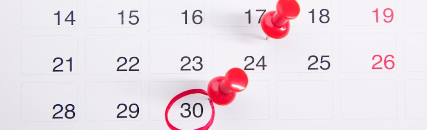
Fraîcheur du contenuContent freshness
Les dates de mise à jour vérifiées une par une, les références réglementaires relues sur le texte officiel. Onze pages corrigées, deux laissées volontairement à leur ancienne date.Update dates checked one by one, regulatory references re-read against the official text. Eleven pages corrected, two deliberately left on their old date.
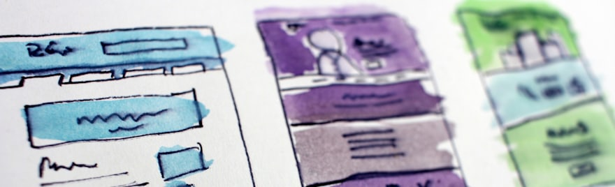
La forme, pas le fondThe form, not the substance
Un sommaire, un découpage en sections qui se suffisent à elles-mêmes, des encarts et des questions fréquentes. Aucun texte réécrit, aucune adresse déplacée.A table of contents, a split into sections that stand on their own, callouts and frequently asked questions. No text rewritten, no address moved.
Le résultatThe result
Le moteur a commencé à découper les articles, section par section. Dans le relevé, vingt-six lignes ne désignent pas des pages mais des sections d'articles : l'adresse pointe à l'intérieur du texte. Un même article y apparaît huit fois : lui-même, puis chacune de ses sept sections, avec ses propres impressions et sa propre position.The engine started slicing the articles section by section. In the reading, twenty-six rows point not to pages but to sections inside articles: the address targets a place within the text. One article appears eight times: itself, then each of its seven sections, with its own impressions and its own position.
Ce n'est pas un réglage qu'on active. C'est la conséquence d'un sommaire et d'un découpage où chaque section se suffit à elle-même. Le moteur cesse de renvoyer vers l'article : il renvoie vers le passage.This isn’t a setting you switch on. It follows from a table of contents and a structure where each section stands on its own. The engine stops pointing at the article: it points at the passage.
Ce que ça vaut pour les moteurs d'IA: ils ne citent pas des pages, ils citent des passages. Une structure que Google sait découper est une structure qu'un modèle sait extraire. Ça ne prouve pas que les citations augmentent, ça prouve que la condition d'entrée est remplie.What this is worth for AI engines: they don’t cite pages, they cite passages. A structure Google can slice is a structure a model can extract. It doesn’t prove citations increase, it proves the entry condition is met.
L'IA comme assistantAI as an assistant
Le métier ne change pas. La vitesse et le périmètre, oui.The craft doesn’t change. The speed and the scope do.
Les audits ont été faits à la main : crawls lancés, exports dépouillés, code source lu, textes réglementaires ouverts à la source. Les données ont ensuite été co-analysées avec l'IA : elle a proposé ses angles, ils ont été discutés et croisés avec mes connaissances du métier et du terrain, puis les décisions ont été prises. Le déploiement n'est venu qu'après. C'est ce qu'on apporte en entrée qui fait la valeur de ce qui sort : des connaissances plutôt qu'une consigne. C'est de là que viennent le gain de vitesse, l'élargissement du périmètre et la qualité de l'exécution, et c'est exactement ce qui manque quand on se contente de demander à une IA de faire le travail.The audits were done by hand: crawls run, exports worked through, source code read, regulatory texts opened at the source. The data were then co-analysed with the AI: it offered its angles, they were discussed and cross-checked against what I know of the craft and the field, and the decisions followed. Deployment came only after that. What you bring in is what determines the value of what comes out: knowledge rather than an instruction. That is where the gain in speed, the wider scope and the quality of execution come from, and it is exactly what is missing when you simply ask an AI to do the work.
sans assistance de l'IAof sites regain their traffic
without AI assistance du trafic organique conservé
avec l'assistance de l'IAof organic traffic kept
with AI assistance
23 % des migrations retrouvent leur trafic organique en moins de quatre-vingt-dix jours, sur 1 052 migrations de domaine mesurées : médiane de reprise à 304 jours, et 13,9 % sans aucune reprise après trois ans (étude du 26 juin 2026). Sur les 892 migrations du relevé précédent, la reprise la plus rapide jamais observée est de 19 jours : aucune migration mesurée n'est repartie sans rien perdre. Ici, il n'y a rien eu à rattraper.23% of migrations regain their organic traffic in under ninety days, across 1,052 domain migrations measured: median recovery at 304 days, and 13.9% with no recovery at all after three years (study of 26 June 2026). Across the 892 migrations of the previous dataset, the fastest recovery ever observed is 19 days: no measured migration came through without losing anything. Here, there was nothing to make up.
| Ce qui changeWhat changes | Sans assistance de l'IAWithout AI assistance | Avec assistance de l'IAWith AI assistance |
|---|---|---|
| Le temps du chantierTime on the clock | Sans assistance de l'IAWithout AI assistanceEntre l'audit, le plan et la bascule, les phases se suivent. Selon la taille du site, l'ensemble du processus peut aller jusqu'à vingt semaines.Between the audit, the plan and the switch, the phases follow one another. Depending on the size of the site, the whole process can run up to twenty weeks. | Avec assistance de l'IAWith AI assistanceTrois semaines en tout, de bout en bout : de l'audit au crawl de référence, puis à la mise en ligne.Three weeks in all, end to end: from the audit to the reference crawl, then to going live. |
| Périmètre du chantierScope of the work | Sans assistance de l'IAWithout AI assistanceLe référencement et le développement sont généralement gérés séparément.SEO and development are usually handled separately. | Avec assistance de l'IAWith AI assistanceLes corrections se déploient très vite, et la migration comme la restructuration s'appliquent directement côté développement.Fixes are deployed very fast, and both the migration and the restructuring are applied directly on the development side. |
| Trouver les faillesFinding the flaws | Sans assistance de l'IAWithout AI assistanceExtraire toutes les données et les lire prend beaucoup de temps : il faut les réorganiser, les mettre en tableaux, en faire des rapports. Le temps disponible finit par décider de ce qu'on regarde et de ce qu'on laisse. Ce qu'on ne regarde pas reste invisible, et fait parfois prendre de mauvaises décisions.Pulling all the data out and reading it takes a long time: it has to be reorganized, put into tables, turned into reports. The time available ends up deciding what gets looked at and what gets left. What is not looked at stays invisible, and sometimes leads to the wrong call. | Avec assistance de l'IAWith AI assistanceUn balayage complet : on donne toute la donnée et on obtient un premier aperçu. Ensuite, ce sont les connaissances du métier qui décident des directions, et qui font descendre de plus en plus profond pour faire parler les données.A full sweep: you hand over all the data and get a first overview. From there it is craft knowledge that decides which directions to take, and that digs deeper and deeper to make the data talk. |
 Cursor
Cursor Claude CodeWispr FlowLocalWP-CLI
Claude CodeWispr FlowLocalWP-CLI GitHub
GitHub
06 · Visibilité dans les LLM06 · Visibility in LLMs
Le SEO vise le trafic. Le GEO vise la mention.SEO aims at traffic. GEO aims at the mention.
En SEO, l'objectif est le trafic : une position, un clic, une visite. Dans une réponse d'IA, il n'y a pas de clic à gagner : l'objectif est d'être la source citée. C'est un autre objet, et il demande un autre instrument, parce qu'une réponse d'IA n'est pas déterministe : posée deux fois, la même question ne donne pas le même résultat. Le principe retenu est simple : on échantillonne. La même question est reposée à intervalle régulier, et c'est la fréquence, assortie d'une marge d'erreur, qui rend le résultat lisible.In SEO the objective is traffic: a position, a click, a visit. In an AI answer there is no click to win: the objective is to be the cited source. That is a different object, and it needs a different instrument, because an AI answer is not deterministic: asked twice, the same question does not return the same result. The principle is simple: you sample. The same question is asked again at regular intervals, and it is the frequency, paired with a margin of error, that makes the result readable.
L'inventaire des questions se fait avec les outils du métier : le bloc « Autres questions posées » de Google, consulté en navigation privée, les données de Semrush et d'Ahrefs, AlsoAsked pour étendre l'arborescence, et les échanges avec les clients.The inventory of questions is built with the tools of the trade: Google’s “People also ask” block, consulted in private browsing, Semrush and Ahrefs data, AlsoAsked to extend the tree, and conversations with clients.
Le point de départ est un zéro mesuré : à l’audit manuel de départ, aucune des questions posées ne faisait ressortir la marque, les robots d’IA étant bloqués par l’ancienne plateforme. Tout ce qui précède y concourt : la structure des pages, le balisage en entités, le découpage en sections qui se suffisent à elles-mêmes. Aujourd'hui, 59 % des réponses citent la marque, et le taux reste stable.The starting point is a measured zero: in the initial manual audit, none of the questions asked surfaced the brand, the AI crawlers being blocked by the old platform. Everything above feeds into it: the structure of the pages, the entity markup, the split into sections that stand on their own. Today, 59% of answers cite the brand, and the rate stays stable.
Quatre moteurs interrogés, Claude, ChatGPT, Perplexity et AI Overviews : la marque n'apparaissait dans aucune réponse en avril, elle apparaît aujourd'hui dans une sur deux.Four engines queried, Claude, ChatGPT, Perplexity and AI Overviews: the brand appeared in no answer in April, it now appears in one out of two.
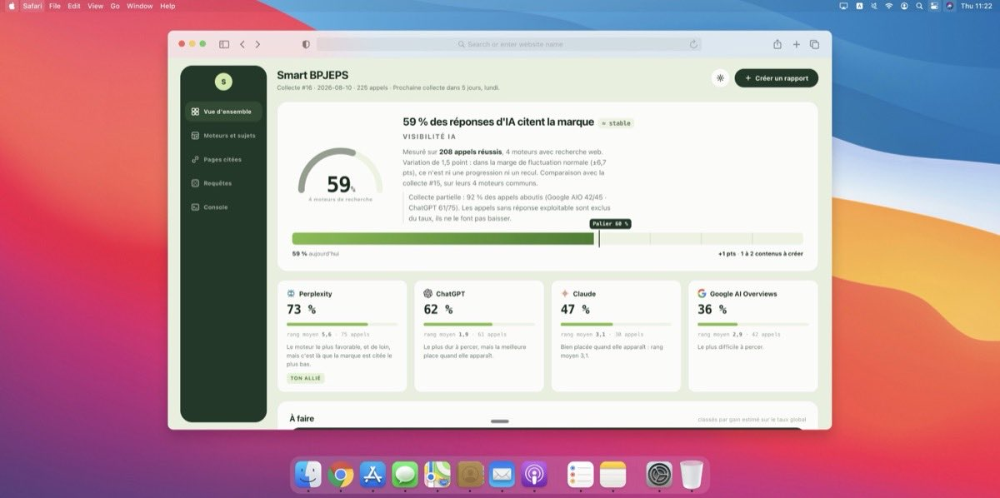
07 · Les performances07 · Performance
De 19,5 secondes à 1,3 seconde sur mobileFrom 19.5 seconds to 1.3 seconds on mobile
L'audit relevait 19,5 secondes pour l'affichage du contenu principal sur mobile. Le détail en était connu, et aucune de ses lignes n'était corrigeable : environ 850 Kio de code imposés sur chaque page par la plateforme, une durée de cache navigateur non réglable, des polices externes non préchargées, un logo servi treize fois plus grand que son affichage, et 1 700 Kio récupérables sur six images seulement.The audit measured 19.5 seconds to render the main content on mobile. The breakdown was known, and not one of its lines could be fixed: around 850 KiB of code forced onto every page by the platform, a browser cache duration that could not be set, external fonts not preloaded, a logo served thirteen times larger than its display size, and 1,700 KiB recoverable on six images alone.
Le relevé mobile de juin 2026, le jour de l'optimisation de l'accueil, donne 55 en performances sur mobile et 77 sur ordinateur. Deux jours après la bascule, la même page mesure 100, et la navigation agentique est validée 3 sur 3. Le relevé du 12 août 2026 donne 98 en performances, 96 en accessibilité, 100 en bonnes pratiques et 100 en SEO, avec 1,3 seconde d'affichage du contenu principal, 10 millisecondes de blocage et 0,001 de décalage visuel, en émulation Moto G Power sur 4G lente.The mobile reading of June 2026, on the day the homepage was optimized, gives 55 for performance on mobile and 77 on desktop. Two days after the switch, the same page measures 100, and agentic navigation passes 3 out of 3. The reading of 12 August 2026 gives 98 for performance, 96 for accessibility, 100 for best practices and 100 for SEO, with 1.3 seconds to render the main content, 10 milliseconds of blocking time and 0.001 of layout shift, emulating a Moto G Power on slow 4G.
Le site tournait sur Squarespace, un système de blocs empilés où l'essentiel du rendu reste hors de portée : le code injecté sur chaque page ne se retire pas, la durée de cache ne se règle pas, les polices ne se préchargent pas. Passer sur un stack entièrement maîtrisé a rendu la main sur les trois niveaux à la fois, le développement, le serveur et le référencement, et c'est ce qui a permis de traiter ces lignes une par une.The site ran on Squarespace, a system of stacked blocks where most of the rendering stays out of reach: the code injected into every page cannot be removed, the cache duration cannot be set, the fonts cannot be preloaded. Moving to a fully owned stack gave back control on all three levels at once, development, server and SEO, and that is what made it possible to work through those lines one by one.
Le choix d'un stack reste une préférence, liée à la façon dont on veut tenir son activité. Ce qui se discute, ce sont les résultats.The choice of a stack remains a preference, tied to how you want to run your business. What is up for discussion is the result.
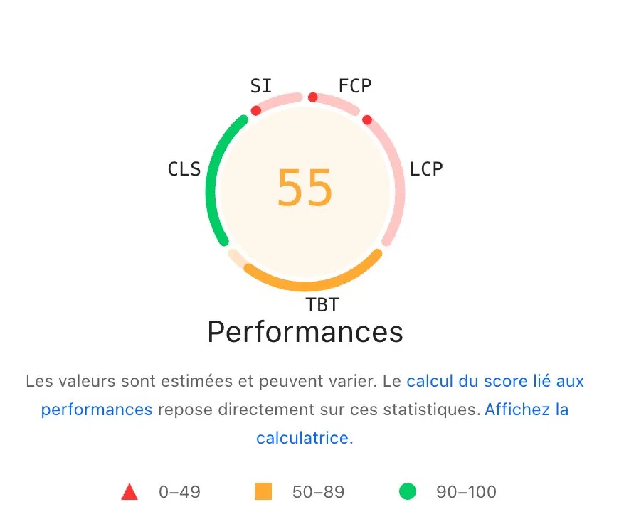
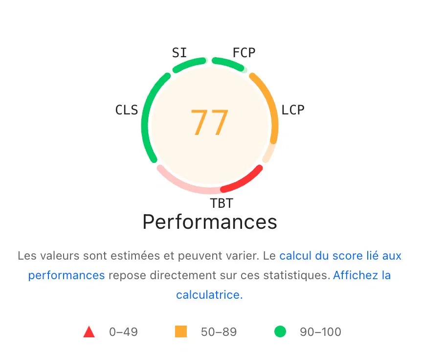
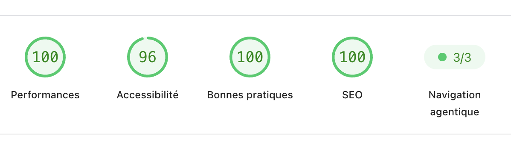
08 · Ce qui vient ensuite08 · What comes next
La restructuration en silosRestructuring into silos
La migration a rendu le site modifiable. La restructuration répond à une autre question : non plus « qu'est-ce que je ne dois pas perdre » mais « qu'est-ce que je dois changer ». Le plan est arrêté et daté : l'exécution est calée sur la sortie de la période de gel, au 20 août 2026.The migration made the site editable. Restructuring answers a different question: no longer “what must I not lose” but “what must I change”. The plan is settled and dated: execution is scheduled for the end of the freeze period, on 20 August 2026.
- 936 requêtes réelles analysées : le plan part des recherches faites, pas de mots-clés supposés936 real queries analysed: the plan starts from searches actually made, not assumed keywords
- 6 silos étanches et deux sous-silos, chacun avec sa page mère et ses filles6 watertight silos and two sub-silos, each with its parent page and children
- 4 profils de visiteurs croisés avec les données avant tout arbitrage éditorial4 visitor profiles cross-checked with the data before any editorial call
- Un mot-clé principal par page : deux pages sur la même requête se privent mutuellementOne primary keyword per page: two pages on the same query starve each other
- Chaque page a son statut : conservée, redirigée ou à créerEvery page has a status: kept, redirected or to be created
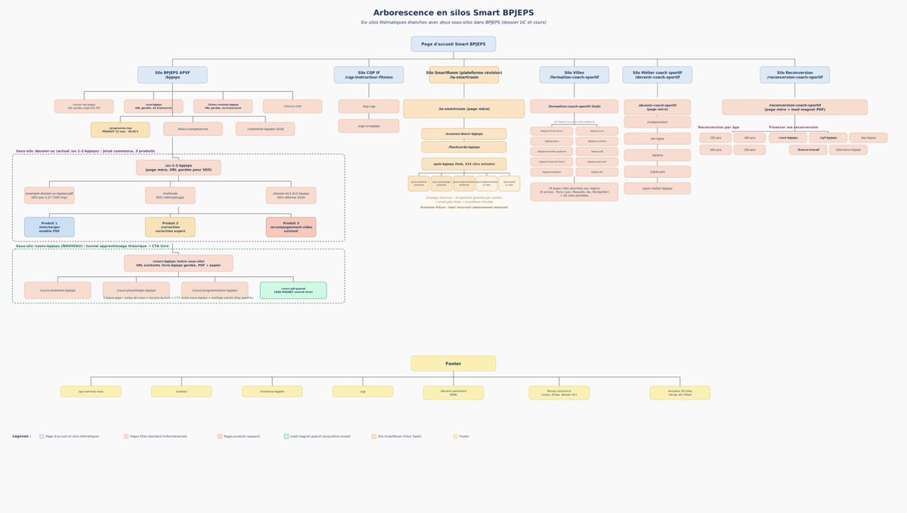
09 · Les annexes09 · Appendices
Les relevés datés du projetThe project’s dated readings
Les captures ont été prises au fil du chantier, quand le moment s’y prêtait. Tout n’a pas pu l’être : l’essentiel du suivi a été écrit, dans des notes et des fichiers, plutôt que photographié. Ce qui a pu être récupéré est ici, dans l’ordre chronologique, et chaque capture porte sa date et sa fenêtre de mesure.The screenshots were taken as the work went along, whenever the moment allowed. Not all of it could be: most of the tracking was written down, in notes and files, rather than captured. What could be recovered is here, in chronological order, and every screenshot carries its date and measurement window.
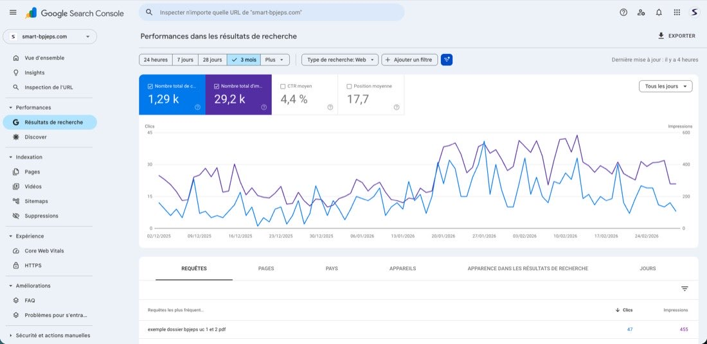
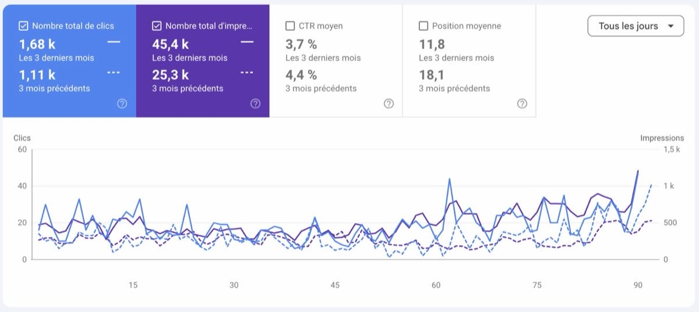
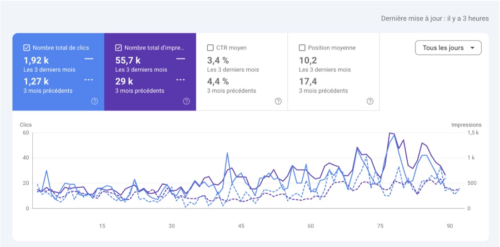
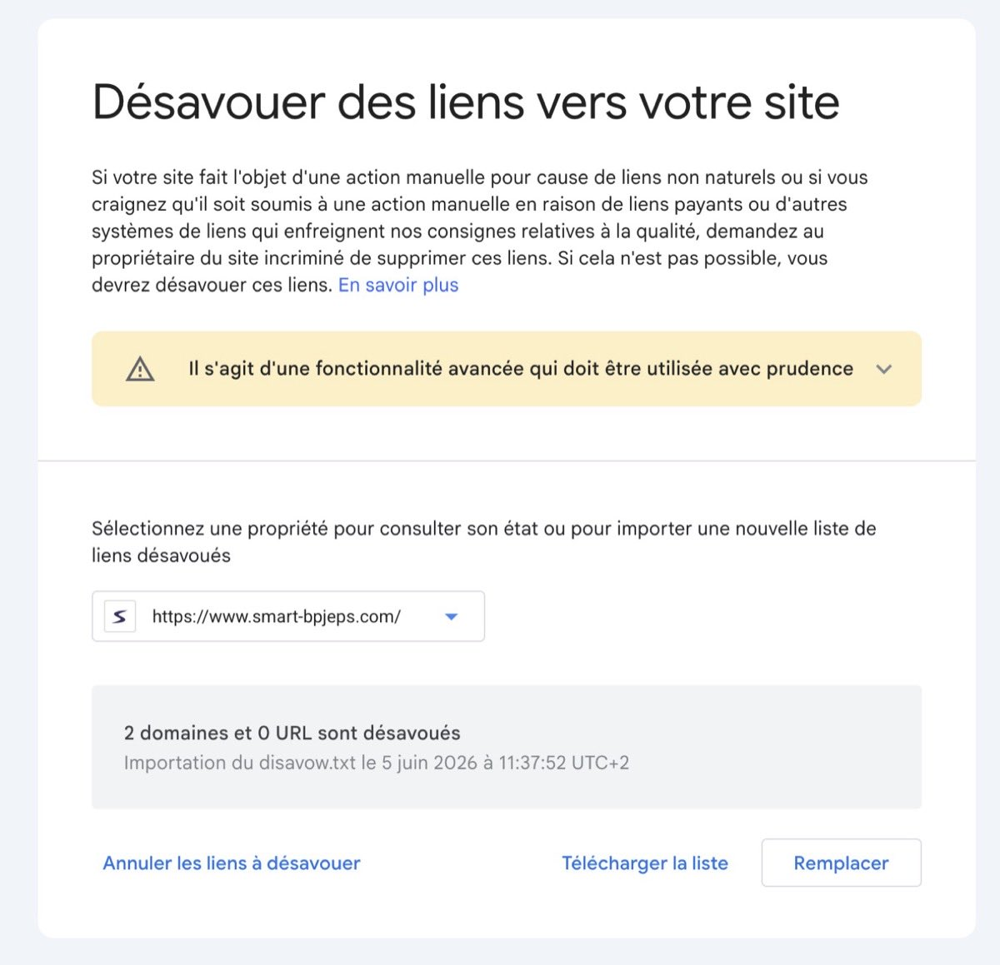
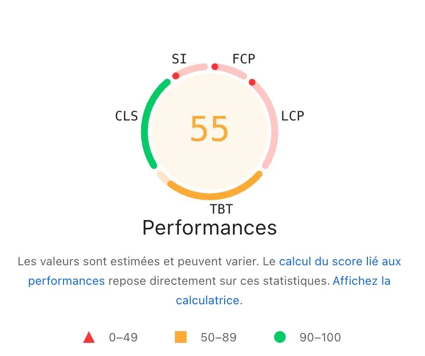
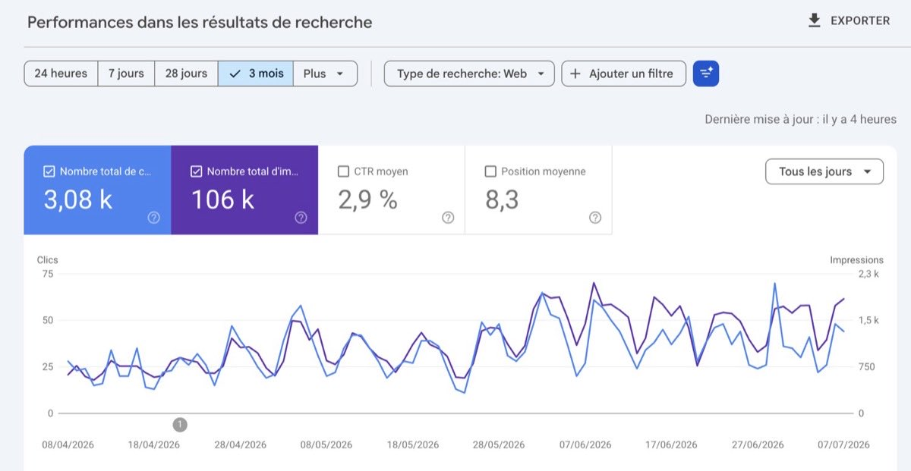
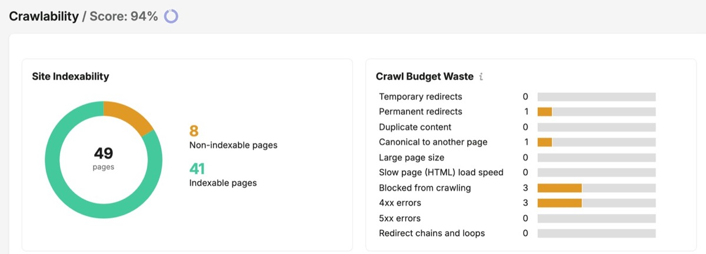
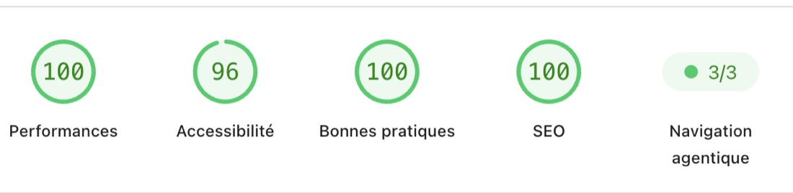
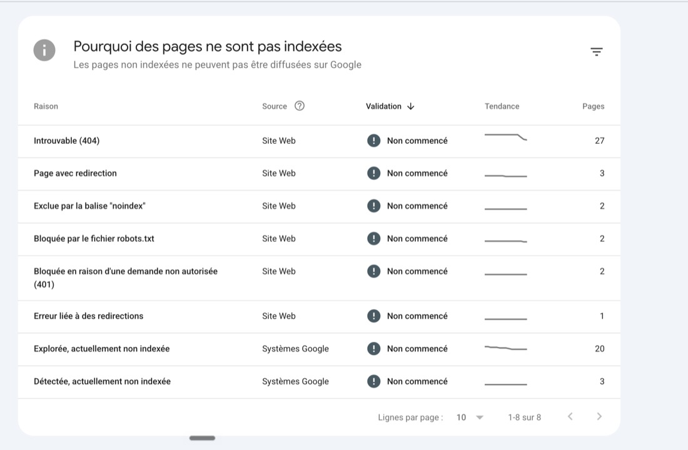